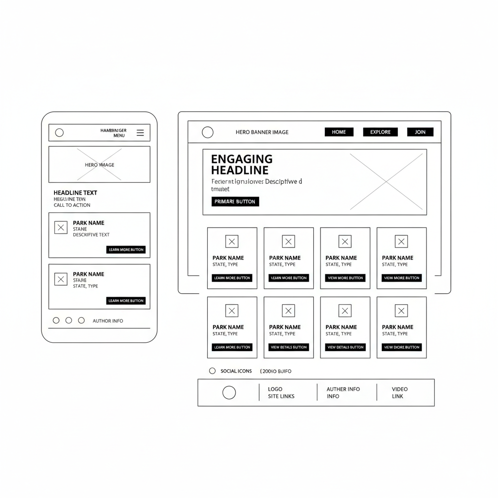

site name
park scout
this name was selected because it is short, easy to remember, and clearly describes the site's purpose of helping users scout for their next national park destination.
site purpose
the purpose of park scout is to provide a dynamic, searchable directory of national parks. the site will help users browse parks, view specific details through interactive modals, and provide a way to sign up for a newsletter to stay updated on park news.
scenarios
- i want to see a list of national parks and monuments to find one in my state.
- i want to see specific details about a park, like its designation and description, without leaving the main browse page.
color scheme
primary color: #2d5a27 (forest green) - used for headings and navigation.
secondary color: #f4f1ea (off-white) - used for the site background.
accent color: #d4a373 (earthy tan) - used for buttons and decorative borders.
typography
headings: 'montserrat' or sans-serif.
body text: 'open sans' or sans-serif.
wireframe
the following wireframe shows the layout for both mobile and desktop views of the home page.
